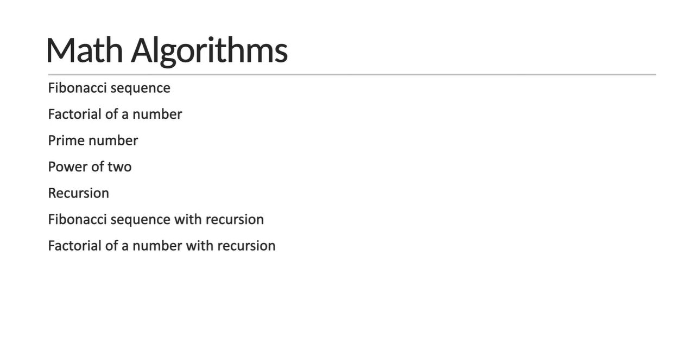
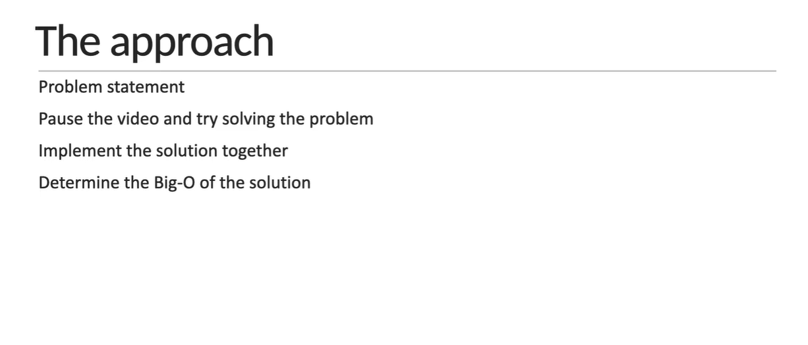

JavaScript Algorithms - 2 - What is an Algorithm?
-
What is an algorithm? ⇊
an algorithm is a set of well-defined instructions to solve a particular problem

-
Characteristics of an algorithm ⇊
-
algorithm should have defined inputs and outputs(in our example we have two numbers as inputs and their sum as the output ) -
each step in an algorithm should be clear and unambiguous( in our example we have two steps add the numbers using the plus operator and return the sum ) -
an algorithm should be language independenti.e it should be written in such a way that it can be used with different programming languages
[N.B: although i had mentioned we would be using javascript to write our code the algorithm itself is by no means related to javascript ] -
JavaScript Algorithms - 3 - Time and Space Complexity
The measure of an algorithm depends on a number of factors,
-it can change based on the programming language used to implement the algorithm
-the computer program runs on
-the other programs running at the same time
-the quality of the operating system and many other factors
So that's why we evaluate(measure) the performance of an algorithm in terms of its
Time complexity: which is the amount of time taken by an algorithm to run as a function of input size
Space complexity: which is the amount of memory taken by an algorithm to run as function a of input size
-
When and How to consider the complexity? ⇊
one algorithm can be faster for a small input size but slower for a larger input size. if your app needs to be very quick and has plenty of memory to work with you should think about time complexity and don't have to worry about space complexity on the other hand if you have little memory to work with you should think about space complexity and don't have to worry about time complexity -
How do we represent the time and space complexity? ⇊
we represent the time and space complexity using asymptotic notations (asymptotic notations are mathematical tools to represent time and space complexity) there are mainly three asymptotic notations-
Big-O notation(O notation) for worst-case complexity -
Omega notationfor best case complexity -
Theta notationfor average case complexity
-
JavaScript Algorithms - 4 - Big-O Notation
-
What is Big-O Notation? ⇊
the worst case complexity of an algorithm is represented using the Big-O Notation which describes the complexity of an algorithm using algebraic terms.The Big-O Notation has two important characteristics
- It is expressed in terms of the input and
- It focuses on the bigger picture without getting caught up in the minute new details
-
Big-O Notation for Time and Space complexity? ⇊
There are different terms of measuring Big-O Notation for Time and Space complexity,
-
O(n)- Linear -
O(1)- Constant -
O(n2)- Quadratic (3n2+5n+1 ..) -
O(n3)- Cubic -
O(log n)- Logarithmic (input size reduces by half after each iteration)
[N.B: O(n) and O(log n) is most efficient and O(n!) is the least. Here n is the no of repetitions of a specific line of code to get the output of a function.]
-
-
Explanation Big-O Notation Terms ⇊
 [watch code in VS Code]
[watch code in VS Code]
Code Reveal

let's calculate the number of times each statement is executed, -line two executes only once -line four however executes n times -line 6 again is executed just once so the total count is n plus 2. But as far as we know algorithm focuses on the bigger picture without getting caught up in the minute new details due to this the O(n)-Notation is used to describe the performance of an algorithm. -
Special Note: ⇊
- Multiple algorithms exist for the same problem and there is no one right solution different algorithms work well under different constraints
- The same algorithm with the same programming language can be implemented in different ways (for JS we can code the same but in a different manner by ES6 / ES5 / vanilla style)
- when writing programs at work don't lose sight of the big picture rather than writing clever code write code that is simple to read and maintain
JavaScript Algorithms - 5 - Objects and Arrays Big-O
-
Big-O Notation for JS Object ⇊

Insert,Remove,Access has constant O(1) cause they are specific to the target but Rests mentioned are linear O(n) cause they depends on the no of element in the object[watch code in VS Code]Code Reveal

-
Big-O Notation for JS Array ⇊

Insert,Remove,Access has constant O(1) cause they are specific to the target but Push, Pop has constant O(1) cause the changes at the end of an array element which doesn't change the Index no of all element Rests mentioned are linear O(n) cause they depends on the no of element in the object and in some cases the Index no is changed for all element like adding any new item at the start of an array
JavaScript Algorithms - 6 - Math Algorithms
-
Problem Overview ⇊
 
JavaScript Algorithms - 7 - Fibonacci Sequence
in mathematics the fibonacci sequence is a sequence in which each number is the sum of the two preceding ones the first two numbers in the sequence are 0 and 1.
-
Problem ⇊
given a number "n" find the first "n" elements of the fibonacci sequence
[watch code in VS Code]Code Reveal

-
Big-O Determination ShortCut Cheatsheet formula

-
Time Complixity of our Code:
from our cheat sheet it is pretty evident that big o is linear time complexity. so big o is equal to O(n). Cause as the valueof n increases the number of times line 4 executes also increasesBig O = O(n)
JavaScript Algorithms - 8 - Factorial of a Number
in mathematics the factorial of a non-negative integer "n" denoted "n!" is the product of all positive integers less than or equal to "n"
-
Problem ⇊
given an integer "n" find the factorial of that integer
[watch code in VS Code]Code Reveal

-
Time Complixity of our Code:[follow CheatSheet of tuto7]
from our cheat sheet it is pretty evident that big o is linear time complexity. so big o is equal to O(n). Cause as the valueof n increases the number of times line 4 executes also increasesBig O = O(n)
JavaScript Algorithms - 9 - Prime Number
Prime Number is a natural number greater than 1 that is not a product of two smaller natural numbers
-
Problem ⇊
given a natural number "n" determine if the number is prime or not
[watch code in VS Code]Code Reveal solve 1

-
Time Complixity of our Code[of solve-1]
that Big o is linear time complexity so big o is equal to O(n) as the value of n increases the number of times line six executes also increases -
Time Complixity of our Code[of solve-2]
let's now determine the time complexity, if n is equal to 100 we check till n is equal to 10. if n is equal to 10,000 we check till 100. so as the size of n increases the number of times the for loop statement executes increases but not in the same proportion this optimize function has O(sqrt(n)) time complexity
[watch code in VS Code]
Code Reveal solve 2

JavaScript Algorithms - 10 - Power of Two
-
Problem ⇊
given a positive integer "n" determine if the number is a power of 2 or not
[watch code in VS Code]Code Reveal solve 1

-
Time Complixity of our Code[of solve-1]
Big o is linear time complexity so big o is equal to O(n) as the value of n increases the number of times line six executes also increases Big-O = O(n) -
Time Complixity of our Code[of solve-2]
let's estimate the big-o together, a function contains one while loop from our cheat sheet you may think that the big o is linear time complexity. however this is a while loop and you need to pay attention to how n is changed within the loop body in each iteration we are reducing the value of n by half if we take a look at our big o guide this satisfies the statement so the time complexity is actually O(logn) the number of instruction executions increases as n grows but not by the same amount so Big-O = O(logn) -
Time Complixity of our Code[of solve-3]
Constant Time Complexity Big-O = O(1)
[watch code in VS Code]
Code Reveal solve 2

[watch code in VS Code]
Code Reveal solve 3